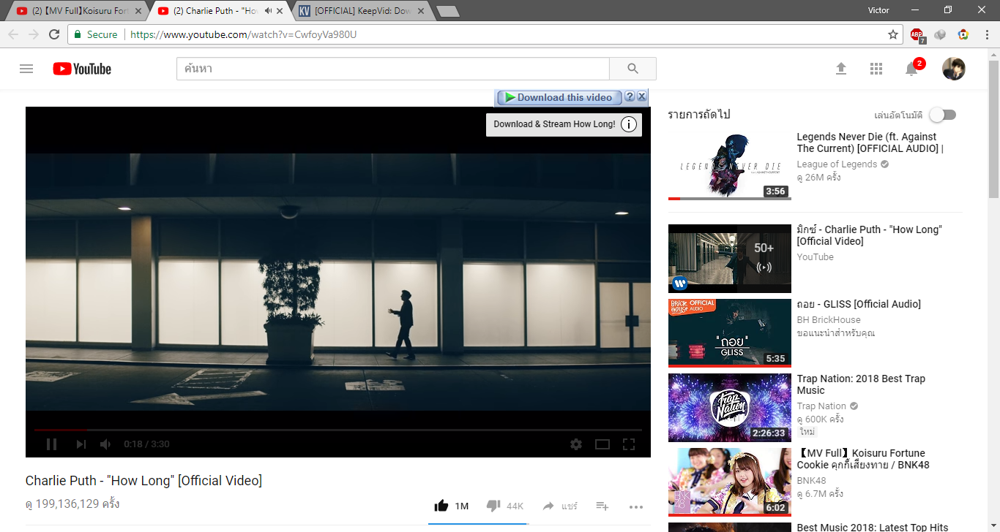
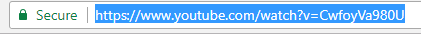
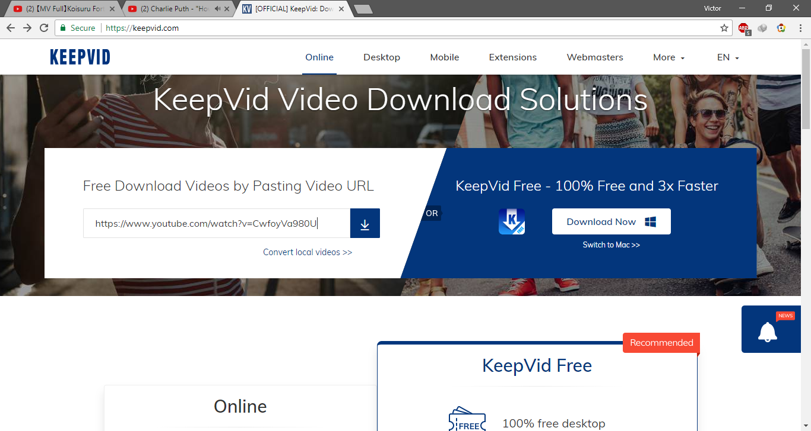
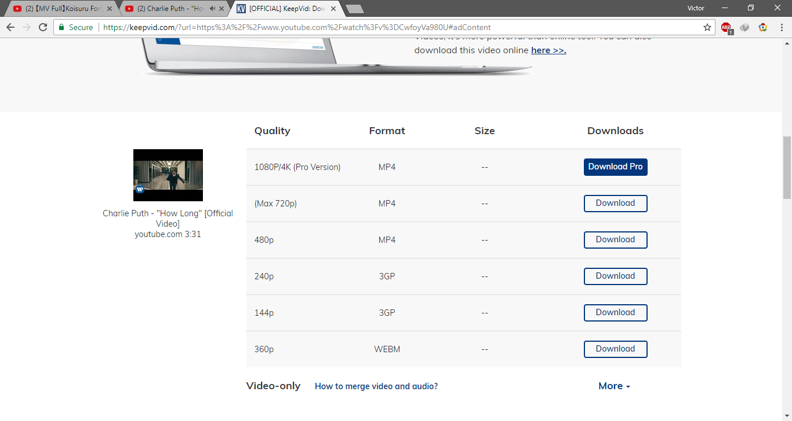

Keepvid ດາວໂຫລດ Video ໃນ youtube ຟຣີໂດຍບໍ່ໃຊ້ໂປຣແກຣມດາວໂຫລດ
ສຳລັບໃຜທີຕ້ອງການດາວໂຫລດວີດີໂອຢູ່ໃນ Youtube ແຕ່ໂປຣແກຣມດາວໂຫລດບໍ່ເດ້ງຂຶ້ນມາໃຫ້ກົດດາວໂຫລດຫຼືວ່າບໍ່ໄດ້ຕິດຕັ້ງໂປຣແກຣມດາວໂຫລດສາມາດດາວໂຫລດໂດຍເຂົ້າໄປທີ Website keepvid ແລ້ວດາວໂຫລດຟາຍແບບບໍ້ຕ້ອງຕິດຕັ້ງ IDM
ຂັ້ນຕອນການດາວໂຫລດ
1 ເລືອກ video ໃນ youtube ທີ່ທ່ານຕ້ອງການດາວໂຫລດມາໄວ້ເທິງເຄື່ອງ

2 ຄັດລອກ Link ໂດຍກົດ Ctrl+c ເທິງແປ້ນພິມ

3 ເຂົ້າໄປທີ www.keepvid.com ແລ້ວວ່າງ linkທີ່ໄດ້ຄັດລອກມາໂດຍກົດ Ctrl+v ເທິງແປ້ນພິມ

4 ກົດ Enter ແລ້ວ Website ຈະ generate link ທີ່ສາມາດດາວໂຫລດໄດ້ມາໃຫ້ເຮົາເລືອກໂຫລດ ໂດຍມີຄວາມຄົມຊັດຕ່າງກັນ ຄລິກດາວໂຫລດເພື່ອເລີມດາວໂຫລດ

ໃນບົດຄວາມຕໍ່ໄປແອັດມິນຈະມາບອກວິທີດາວໂຫລດເພງໂດຍໃຊ້ Keepvid ໃຜທີສົນໃຈສາມາດກົດຕິດຕາມເພຈ facebook ຂອງພວກເຮົາໄດ້ Tricky-IT ເພື່ອຈະບໍພາດບົດຄວາມດີໆແບບນີ້